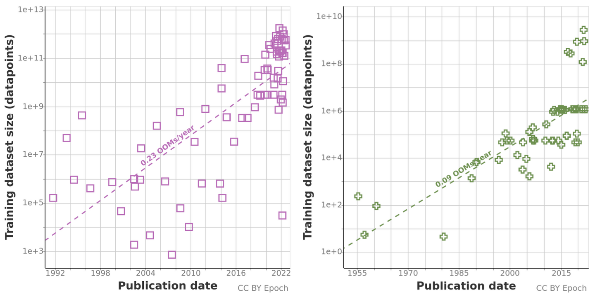
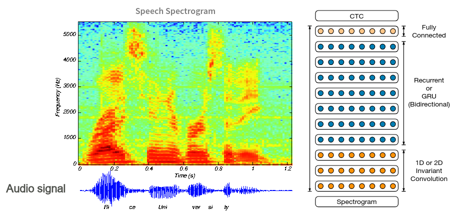
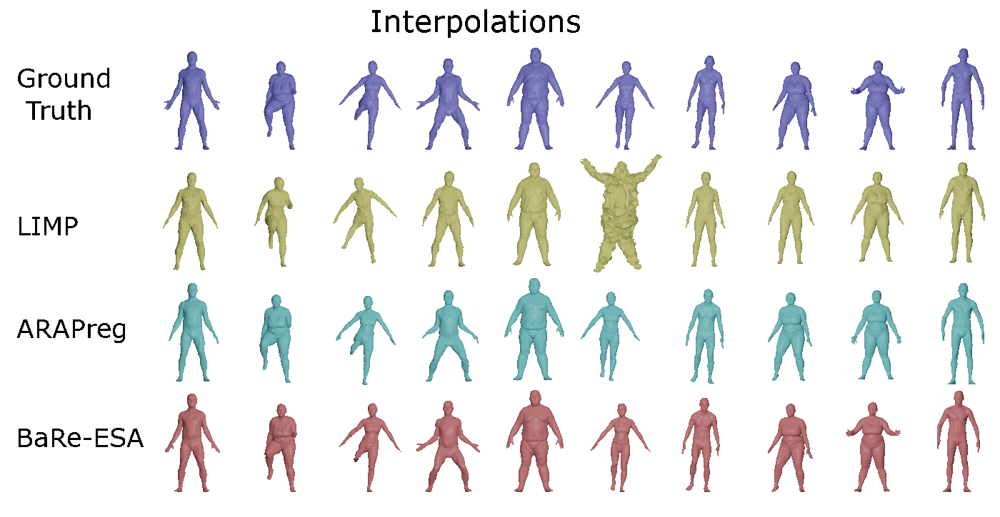
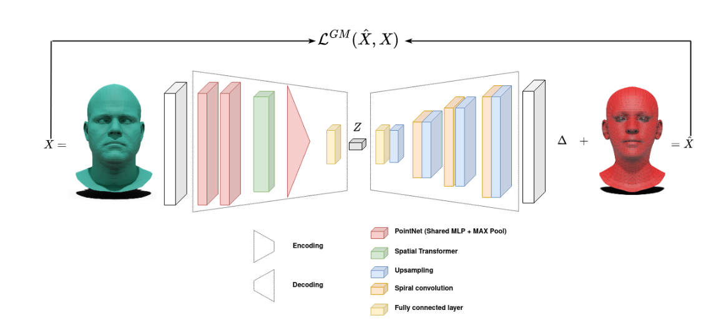
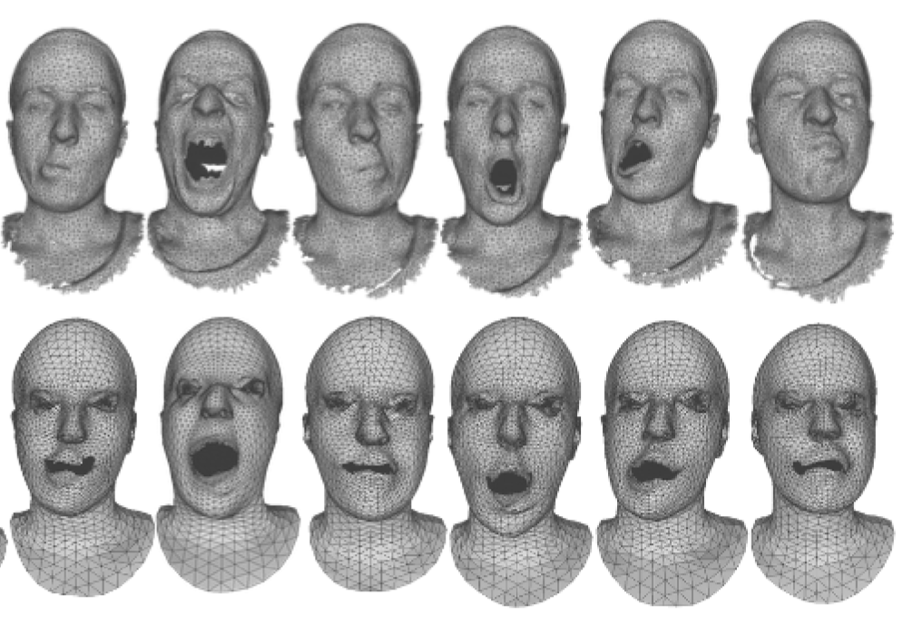

Geometric deep learning: from theory to practice
Slides QRcode
Outline
- What means Geometric Deep Learning ?
- Detailed example: geometric deep learning on point clouds (pointnet)
- Geometric deep learning on surfaces for non-rigid shapes
- (Geometric deep learning in the large-scale era)
What means geometric deep learning ?
Geometric deep learning is the field of research that tries to apply the success of deep learning to non-euclidean data
The deep learning era
Deep learning have proven success over numerous modalities
Timeline of deep learning architectures until 2017 - (Jure Leskovec, Stanford University)
The deep learning era : huge datasets
Training datasets sizes over time. Left: language; right: vision.
Deep learning: The Multi-Layer Perceptron (MLP)
Multi-Layer Perceptron (MLP) Deep neural network consisting of \(L\) layers
Linear layer \(\mathbf{g}^{(k)} = \xi \left( \mathbf{W}^{(k)} \mathbf{g}^{(k-1)} \right)\)
Activation, e.g. \(\xi(x) = \max \{ x, 0 \}\) rectified linear unit (ReLU)
Parameters weights of all layers \(\mathbf{W}^{(1)}, \ldots, \mathbf{W}^{(L)}\) (including biases)
Neural Networks expressivity
Applying MLPs directly on the input data is usually too inefficient!
An RGB image of size \(512 \times 512\) leads to input size:
\(f_{\text{in}} = 512 \times 512 \times 3 \approx 10^6\) nodes.If \(f_{\text{out}} = f_{\text{in}}\) then a single-layer
MLP would have \(\approx 10^{12}\) trainable parameters!
Need to exploit structure in the data!
How to exploit the structure of data ?
- Images: Convolutional Neural Networks

How to exploit the structure of data ?
- Images: Convolutional Neural Networks
- Language: Recurrent Neural Networks
How to exploit the structure of data ?
- Images: Convolutional Neural Networks
- Language: Recurrent Neural Networks
- Audio/Time-series: Mix

What means geometric deep learning ?
Geometric deep learning is the field of research that tries to apply the success of deep learning to non-euclidean data.
Success of deep learning : Have a large scale dataset. Applying the original MLP idea, but adapt the linear and non-linear to the underlying structure of data.
Non-euclidean data
Euclidean data The representation space of data is \(\mathbb{R}^n\).
Non-euclidean data The representation space is non-flat. It can mean that:
- A group (rotation, translation, …) acts on the data even if it leaves in an euclidean space
- The data lives in a non-euclidean space
- Sometimes both
Non-euclidean data is everywhere
Example of 3D shapes tasks
The challenge of non-euclidean data: the case of 3D shapes

Different representations of 3D shapes. Image from Silvia Sellan.
The challenge of non-euclidean data: the case of 3D shapes
Comparison of dataset sizes
The challenge of non-euclidean data: the case of 3D shapes
Left: different transformations of a human shape. Right: Different discretization of the same human shape.
The challenge of non-euclidean data: the case of 3D shapes
Left: linear and geodesic paths in the shape space. Right: the human shape space is non linear.
The human shape space can be represented by the manifold of immersions of a human template, equipped with a well-designed Riemannian metric.
The challenge of non-euclidean data: the case of 3D shapes
By making computation on those manifolds, we can beat complex deep learning architectures!
Comparison of Bare-ESA interpolation against deep learning baselines.
What means geometric deep learning ?
Geometric deep learning is the field of research that tries to apply the success of deep learning to non-euclidean data.
Success of deep learning : Have a large scale dataset. Applying the original MLP idea, but adapt the linear and non-linear to the underlying structure of data.
Non-euclidean data : The geometry of the data space is important! Plus, the datasets size are smaller (in medical imaging, some datasets have only … a few hundreds shapes or less)
What about taking images?
Advantages
- Efficiency & simplicity
- Can use (pre-trained) CNNs!
- Can be used to optimize 3D shapes via differentiable rendering.
Limitations
- Are cumbersome for local analysis (e.g., segmentation)
- Are not adapted to deformable shapes
- Not great for topologically complex shapes
What about projecting to euclidean space?
Voxelize a surface into a \(\mathbb{R}^{d*d*d}\) grid.
What about projecting to euclidean space?
- Loss of information

What about projecting to euclidean space?
- Loss of information
- Computationnally expensive
What about projecting to euclidean space?
- Loss of information
- Computationnally expensive
- Bad performance
Geometric deep learning on point clouds
Point clouds
Point clouds tasks
Naive approach #1
A simple network (shared MLP).
- Input: a 3-dimensional vector (3D coordinates)
- Output: C-dimensional prediction (class label). Apply the same network to each point of the point cloud.
Naive approach #1
Processing each point independently! We will learn a function from 3D coordinates to a label. No communication between points = “shape awareness”.
Naive approach #2
Reshape input to a matrix X of size (3*N). Fully connected layers (MLP) from X to a C-dimensional vector.
Naive approach #2
- Points tied to their ‘index’ = order in the point cloud (weights for 1st point not same as, e.g., 3rd point).
- Cannot handle variable input sizes.
PointNet
PointNet
PointNet
PointNet
PointNet
PointNet
PointNet
PointNet
PointNet
PointNet
PointNet

PointNet
Improving PointNet
PointNet++ architecture

And more…
Many works have tried to tackle this problem, including :
- KPConv (2018)
- DGCNN (2018)
- PointTransformer (2020)
Current state-of-the-art: PointTransformer v3 (2024). However, research remains active in this area.
Applications to non-rigid shapes (faces)
Morphable model of faces
Applications to non-rigid shapes (faces)
Simple model, Besnier et al. 2023
Applications to non-rigid shapes (faces)
Comparisons against FLAME morphable model
Applications to non-rigid shapes (faces)
Reconstruction of unregistered faces
Summary: PointNet and variants
Advantages
- Invariant to permutation
- Robust to parameterization
- As expressive as MVCNNs, with less computation power
Disadvantages
- Ignores the structure of data!
- Robust != invariant
Parameterization: extreme cases

Robustness to parameterizations
PointNet is not robust to extreme cases of reparameterizations (Besnier et al. 2022)
Exploiting the structure of data
Le-Net 5 architecture, 1999
Convolutions exploits the structure of data! Can we apply them to 3D?
-> This field have been very active. We will cover only two solutions.
Exploiting the structure of data
Two cases:
- We want to deform a template mesh -> no need for permutation invariance
- We want to learn on arbitrary parameterizations -> need for permutation invariance
Spiral convolutions
Spiral convolutions
Let \(x\) be a mesh vertex, \(R^d(x)\) be the d-ring, \(R^d_j(x)\) denotes the jth element in the d-ring. The spiral patch operator is defined as: \[ S(x) = \{x, R^1_1(x) R^1_2(x),..., R^h_{|Rh|}(x)\} \] The spiral convolution of a signal \(f\), with a filter \(g\) is defined by: \[ (f \ast g) = \sum_{\ell=1}^{L} g_{\ell}\, f\!\left(S_{\ell}(x)\right) \]
Spiral convolutions: auto-encoder
The pooling is done using mesh downsampling like in CNNs. The features are extracted in a hierarchical way!
Spiral convolutions: efficiency
Spiral convolutions: efficiency
Parameterization invariance
Robustness to parameterizations
SpiralNet is not robust to reparameterizations (Besnier et al. 2022)
More mesh graph convolutions
- MeshCNN
- ChebNet
- Geodesic CNNs
- Gauge equivariant CNNs
and more …
Summary: SpiralNet (and mesh graph convolutions)
Advantages
- Takes in account structure of data (mesh graph)
- Parameter and implementation efficient
Disadvantages
- Not robust to reparameterizations
- No generalization to new types of shapes
Naïve parameterization robust convolutions
Idea: Define a parameterized convolutions and apply it to patches (Geodesic CNNs).
Problem: Need to define the patch integration (costly)
Naïve parameterization robust convolutions
Naïve parameterization robust convolutions
Naïve parameterization robust convolutions
DiffusionNet
DiffusionNet
DiffusionNet
DiffusionNet
DiffusionNet
DiffusionNet
DiffusionNet: summary
Advantages
- Takes in account structure of data (surface)
- PLe-Net 5 architecture, 1999arameter and implementation efficient
- Robust++ to reparameterization
Disadvantages
- Preprocessing on large meshes
- Not suitable for large scale data
Applications: local deformations of shapes
Applications: local deformations of shapes

Applications: local deformations of shapes
Conclusion: geometric deep learning for what?
Geometric deep learning is the field of research that tries to apply the success of deep learning to non-euclidean data.
In the specific case of non-rigid shapes, it is used successfully for:
- Shape classification
- Shape segmentation
- Shape matching
- Shape deformation
What we have ignored
- Other types of non-euclidean data (graphs, proteins, …)
- Tasks specific losses (e.g. Chamfer distance, varifolds, …)
- Alternative shape representations (SDFs, …)
- Tasks specific representations (e.g. functional maps)
- Modern architectures (Transformers!!!!)
The large scale era
Modern tasks
- Generation from text or images
- Detailed understanding
- Multimodality
Multi view strikes back!
Overview of CAT3D
Multi view strikes back!
Volumetric strikes back!
Volumetric strikes back!
Overview of TRELLIS
Multimodality

Overview of Molmo
Multimodality
Transformers are able to learn (partly) the underlying structure of data with the attention mechanism. They can be applied in any context.
Open questions
- Can we generalize generation results to non-rigid shapes ?
- How to tokenize efficiently a point cloud or a surface?
- Should we let transformers learn the structure of data or enforce prior knowledge?
Resources
- Geometry Processing and Geometric Deep Learning
- Geometric Deep Learning AMMI
- Equivariant Vision Workshop CVPR
- A gauge theory of neural networks